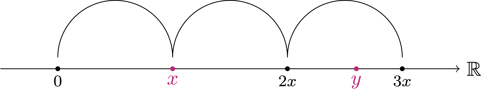

4 Properties of \(\mathbb{R}\)
Now that we established the axiomatic definition of the Real Numbers \(\mathbb{R}\) as a complete ordered field, let us investigate some of the properties of \(\mathbb{R}\). These will be consequence of the axioms of the real numbers, particulaly of the Axiom of Completeness.
4.1 Archimedean Property
The first propery of \(\mathbb{R}\) we investigate is the Archimedean property. This is on of the most useful properties of \(\mathbb{R}\), and it essentially states that the set of natural numbers \(\mathbb{N}\) is not bounded above in \(\mathbb{R}\).
More precisley, the Archimedean Property says two things:
For any \(x \in \mathbb{R}\) we can always find a natural number \(n \in \mathbb{N}\) such that \[ n > x \,. \]
For any \(x \in \mathbb{R}\) with \(x>0\), we can always find a natural number \(m \in \mathbb{N}\) such that \[ 0< \frac1m < x \,. \]
The situation is depicted in Figure 4.2.

Remark 1
The Archimedean property might sound trivial. However it far from trivial. Indeed there are examples of ordered fields \(K\) that satisfy:
- \(\mathbb{N}\subset K\).
- \(K\) does not have the Archimedean property.
- In particular, \(\mathbb{N}\) is bounded above in \(K\).
Let us proceed with the precise statement of the Archimedean property in \(\mathbb{R}\).
Theorem 2: Archimedean Property
Let \(x \in \mathbb{R}\) be given. Then:
There exists \(n \in \mathbb{N}\) such that \[ n > x \,. \]
Suppose in addition that \(x>0\). There exists \(n \in \mathbb{N}\) such that \[ \frac1n < x \,. \]
Proof
Claim: \((\alpha-1)\) is not an upper bound for \(\mathbb{N}\).
Proof of Claim. Indeed, we have \[ (\alpha - 1) < \alpha \,. \tag{4.2}\] Therefore \(\alpha-1\) cannot be an upper bound for \(\mathbb{N}\). Indeed, if by contradiction \(\alpha - 1\) was an upper bound for \(\mathbb{N}\), then we would have \[ \alpha \leq (\alpha - 1)\,, \] since \(\alpha\) is the smallest upper bound for \(\mathbb{N}\). This contradicts (4.2). Therefore \(\alpha - 1\) is not an upper bound for \(\mathbb{N}\).
Conclusion. Since \(\alpha - 1\) is not an upper bound for \(\mathbb{N}\), there exists \(n_0 \in \mathbb{N}\) such that \[ \alpha - 1 < n_0 \,. \] The above implies \[ \alpha < n_0 + 1 \,. \] Since \[ (n_0+1) \in \mathbb{N}\,, \] we have obtained a contradiction, given that \(\alpha\) was the supremum of \(\mathbb{N}\). Thus (4.1) is false, meaning that there exists \(n \in \mathbb{N}\) such that \[ n > x \,. \]
Part 2. Suppose \(x \in \mathbb{R}\) with \(x>0\). We can define \[ y:=\frac1x \,. \] By Part 1 there exists \(n \in \mathbb{N}\) such that \[ n > y = \frac{1}{x} \,. \] Using that \(x>0\), we can rearrange the above inequlaity to obtain \[ \frac1n < x \,, \] which is the desired thesis.
There is another formulation of the Archimedean Property which, depending on the situation, might be more useful. This formulation says the following: If \(x,y \in \mathbb{R}\) are such that \[ 0 < x < y \,, \] then there exists \(n \in \mathbb{N}\) such that \[ nx > y \,. \] In other words, if one does \(n\) steps of size \(x\) in the positive numbers direction, then the resulting number \(nx\) will be larger than \(y\). The situation is depicted in Figure 4.2.

Theorem 3: Archimedean Property (Alternative formulation)
Proof
4.2 Nested Interval Property
Another consequence of the axiom of completeness is the Nested Interval Property. This is yet another way of saying the same thing: \(\mathbb{R}\) does not have gaps.
Let us look at a construction. Suppose given some closed intervals \[ I_n := [a_n,b_n] = \{ x \in \mathbb{R}\, \colon \,a_n \leq x \leq b_n \} \,, \] where the end points are ordered in the following way: \[ a_1 \leq a_2 \leq \ldots \leq a_n \leq \dots \leq b_n \leq \ldots b_n \leq b_1 \,, \] as shown in Figure 4.3.

The intervals \(I_n\) are nested, meaning that \[ I_1 \supset I_2 \supset I_3 \supset \ldots I_n \supset \ldots \] For finite intersections we clearly have \[ \bigcap_{n=1}^k I_n = I_k \,, \] that is, intersecting the first \(k\) intervals yields \(I_k\), the smallest interval in the sequence.
Question 4
\[ \bigcap_{n=1}^\infty I_n := \{ x \in \mathbb{R}\, \colon \,x \in I_n \,, \forall \, n \in \mathbb{N}\} \,. \]
What can we say about it? Is it empty? Is it not empty?
The answer is that the infinite intersection is not empty, because \(\mathbb{R}\) was constructed in a way that it does not have gaps.
Theorem 5: Nested Interval Property
Proof
Example 6
4.3 Revisiting Sup and inf
We now investigate some of the properties of supremum and infimum in \(\mathbb{R}\). The first property is an alternative characterization of the supremum, which we will often use.
Proposition 7: Characterization of Supremum
Let \(A \subset \mathbb{R}\) be a non-empty set. Suppose that \(s \in \mathbb{R}\) is an upper bound for \(A\). They are equivalent:
- \(s = \sup A\)
- For every \(\varepsilon> 0\) there exists \(x \in A\) such that \[ s - \varepsilon< x \,. \]
Proof
Step 2. Assume that Point 2 in the statement of Proposition 7 holds. By assumption we have that \(s\) is an upper bound for \(A\). Suppose by contradiction that \[ s \neq \sup A \,. \] This is equivalent to the statement \[ s \, \mbox{ is not the smallest upper bound of } \, A. \tag{4.10}\] Hence there exists an upper bound \(b\) of \(A\) such that \[ b < s \,. \] Let \[ \varepsilon:= s - b \,. \] By assumption there exists \(x \in A\) such that \[ s - \varepsilon< x \,. \] Substituting the definition of \(\varepsilon\) we get \[ s - s + b < x \quad \implies \quad b < x \,. \] Since \(b\) is an upper bound for \(A\) and \(x \in A\), the above is a contradiction. Therefore (4.10) is false, and \(s\) is the smallest upper bound of \(A\). Thus \(s = \sup A\).
The analogue of Proposition 7 is as follows. The proof is left as an exercise.
Proposition 8: Characterization of Infimum
Let \(A \subset \mathbb{R}\) be a non-empty set. Suppose that \(i \in \mathbb{R}\) is a lower bound for \(A\). They are equivalent:
- \(i = \inf A\)
- For every \(\varepsilon\in \mathbb{R}\), with \(\varepsilon> 0\), there exists \(x \in A\) such that \[ x < i + \varepsilon\,. \]
With the above characterizations of supremum and infimum, it is now easier to prove that some candidate number is the supremum or infimum of some set. As an example, let us characterize supremum and infimum of an open interval of \(\mathbb{R}\).
Proposition 9
Proof
By definition of \(A\), we have that \(a\) is a lower bound for \(A\), since \[ a < x \,, \quad \forall \, x \in A \,. \] We need to prove that \(a\) is the largest lower bound of \(A\). To this end, let \(L\) be a lower bound for \(A\), that is, \[ L \leq x \,, \quad \forall \, x \in A \,. \] We have to prove that \[ L \leq a \,. \tag{4.11}\] Indeed suppose by contradiction that (4.11) does not hold, namely that \[ a < L \,. \] Since \(a<b\) we have \[ a = \frac{2a}{2} < \frac{a+b}{2} < \frac{2b}{b} = b \,, \] showing that the midpoint between \(a\) and \(b\) satisfies \[ \frac{a+b}{2} \in A \,. \] Since \(L\) is a lower bound for \(A\) we have \[ L \leq \frac{a+b}{2} < b \,. \tag{4.12}\] Consider the midpoint \[ M := \frac{a + L}{2} \,. \] We have that \[ M \in A \,. \]
Indeed, recalling that \(a<L\), we have \[ a = \frac{2a}{2} < \frac{a+L}{2} = M \,. \] Moreover by (4.12) we have \(L<b\). Thus \[ M = \frac{a+L}{2} \leq \frac{a+b}{2} < b \,. \] This shows \(M \in A\).
Moreover \[ M < L \,. \]
This is because \(a<L\), and therefore \[ M = \frac{a + L}{2} < \frac{2L}{2} = L \,. \]
This is a contradiction, since by assumption \(L\) is a lower bound for \(A\), and thus we should have \[ L \leq M \,. \] Therefore (4.11) holds, showing that \(a\) is the largest lower bound of \(A\). Thus \(a = \inf A\).
As a corollary of the above we have that the maximum and minimum of an open interval do not exist.
Corollary 10
Proof
The proof that \(\max A\) does not exist is similar, and is left as an exercise.
We can also consider intervals for which one or both of the sides are closed.
Corollary 11
The proof is very similar to the ones above, and is left to the reader for exercise. Let us now compute supremum and infimum of a set which is not an interval.
Proposition 12
Proof
Part 2. We have \[ \frac1n > 0 \,, \quad \forall \, n \in \mathbb{N}\,, \] showing that \(0\) is a lower bound for \(A\). Suppose by contradiction that \(0\) is not the infimum. Therefore \(0\) is not the largest lower bound. Then there exists \(\varepsilon\in \mathbb{R}\) such that:
\(\varepsilon\) is a lower bound for \(A\), that is, \[ \varepsilon\leq \frac1n \,, \quad \forall \, n \in \mathbb{N}\,, \tag{4.13}\]
\(\varepsilon\) is larger than \(0\): \[ 0 < \varepsilon\,. \]
As \(\varepsilon>0\), by the Archimedean Property there exists \(n_0 \in \mathbb{N}\) such that \[ 0 < \frac{1}{n_0} < \varepsilon\,. \] This contradicts (4.13). Thus \(0\) is the largest lower bound of \(A\), that is, \(0 = \inf A\).
Part 3. We have that \(\min A\) does not exist. Indeed suppose by contradiction that \(\min A\) exists. Then \[ \min A = \inf A \,. \] As \(\inf A = 0\) by Part 2, we conclude \(\min A = 0\). As \(\min A \in A\), we obtain \(0 \in A\), which is a contradiction.
4.4 Density of \(\mathbb{Q}\) in \(\mathbb{R}\)
The result we discuss below is so important that it deserves its own section: We are going to show that \(\mathbb{Q}\) is dense in \(\mathbb{R}\). This means that for every given number \(x \in \mathbb{R}\), there exists a rational number \(r \in \mathbb{Q}\) which is arbitrarily close to \(x\). In other words, \(\mathbb{Q}\) and \(\mathbb{R}\) are tightly knitted together: For every pair of \(a,b \in \mathbb{R}\) with \(a<b\), there exists \(r \in \mathbb{Q}\) such that \[ a < r < b \,. \] Let us prove this statement.
Theorem 13: Density of \(\mathbb{Q}\) in \(\mathbb{R}\)
The density result of Theorem 13 has a surprising corollary. Indeed, we have constructed the real numbers \(\mathbb{R}\) so that they would fill the gaps of \(\mathbb{Q}\).
Question 14
The answer is that there are as many irrational numbers as there are real numbers. Moreover for every pair of real numbers, we can always find and irrational number in between.
Corollary 15
Proof
4.5 Existence of Square Roots
4.6 Cardinality
Brief. Use Dommers